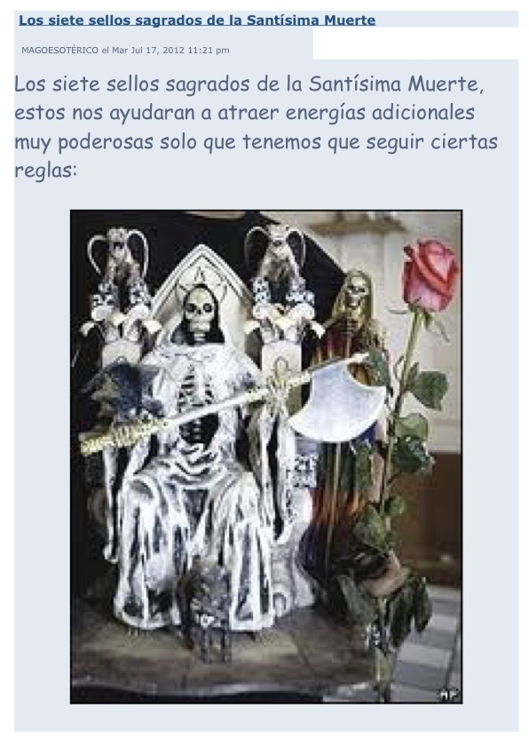

⏳ Disponible por tiempo limitado

Este material reúne información relacionada con los siete sellos sagrados y su uso dentro de prácticas de devoción y energía espiritual.
✔ Información sobre los siete sellos
✔ Reglas de uso
✔ Devoción espiritual
✔ Protección
✔ Conocimiento tradicional
✔ Fortalecer tu práctica espiritual
✔ Comprender el uso de los sellos
✔ Buscar protección y guía
✔ Conectar con energía devocional
Solo personas con respeto y verdadera intención deben acceder.
Más de 100 personas ya accedieron